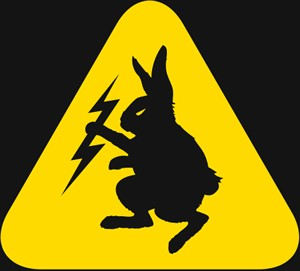

The Bunny: WRCE 1490 AM - Superball (2011) - [COMPLETE]
|

|
|
|
Source Info
Format: mp3 (CBR 128 kbit/s 44100 Hz Stereo)
(tracks 0.1-0.4: 256kbps mp3)
Source: 128kbps mp3 livephish.com stream >
streamripper >
mp3splt-gtk >
individual tracks (all steps lossless)
(tracks 0.1-0.4: ?>256kbps mp3 via cleantone @ demonoid)
Tracks: 42
Duration: 68:30:06
Total Size: 3.92 GiB
Date tagged: 08-Jul-2011 13:22:50
There were some problems with the stream around 10:05-10:11pm 7/2/11 (static,
dropouts, etc) and it recorded silence from 2:33-2:38am 7/3/11. Other than
that, I think this is everything except the Phish parts (soundcheck, FTAs &
the sets) and whatever they played before ~8:30am Thursday.
download all [mediafire]
http://feedthebunny.com/
http://www.facebook.com/bunnyradio
http://twitter.com/#!/bunnyradio/
Track listings, etc
Bluegrass Breakdown - Bill Monroe
Little Community Church Yard - Bill Monroe
Long Walk Off A Tall Rock - George Jones
Fernando - ABBA
Do It Again - Beach Boys
Zip-A-Dee-Doo-Dah - Aly & Aj
Voyage of the SS Danehower - The Philistines Jr.
Roadrunner - Jonathan Richman
Leopard-Skin Pill-Box Hat - Bob Dylan
Western Star - Frank Black and The Catholics
Had Me a Real Good Time - The Faces
There She Goes, My Beautiful World - Nick Cave & The Bad Seeds
Deeper Into Movies - Yo La Tengo
Teenie Weenie Boppie - France Gall
Rain - Petula Clark
Wichita Lineman - Glen Campbell
Amoreena - Elton John
Summer Breeze - Isley Brothers
Ain't No Mountain High Enough - Marvin Gaye
Sugar In My Bowl - Nina Simone
?
Come Together (Instrumental) - ?
I'm Gonna Booglarize ya - Cpt Beefheart - Spotlight Kid
Tush - ZZ Top - The Best of
Honey Bucket - Melvins - Houdini
La Da Doo Down - Archies - Everything's Archie
Kooks - David Bowie - Hunky Dory - 10:30 am Thursday
Rock It With I - David Lindley & El-Rayo X - Win This Record
Wacky Tobacky - NRBQ - You Gotta Be Loose
Skin of My Yellow Country Teeth - Clap Your Hands Say Yeah! - Clap Your Hands..
Laser Show - Fountains Of Wayne - Utopia Parkway
Mahna, Mahna - Animal & THe Muppets -- Muppet Hits
Echoes of Spring / Concentrating - Willie "The Lion" Smith - Willie "The Lion" Smith
Watch The Sun Rise - Big Star - #1 Record
A Little Soulful Tune - Taj Mahal - De Ole Folks At Home
The Winding Stream - Carter Family - Give Me The Roses While I Live
Tout Me Ramane A Toi - Francoise Hardy
The Comedians - Roy Orbison - The Essential
They Don't Know - Kirsty MacColl - The Stiff Years
Mohair Sam - charlie Rich - The Complete Smash Sessions
Fly Trouble / My Sweet Love Ain't Around - Hank Williams - The Original Singles Collection
Ruby Don't Take Your Love To Town - Kenny Rogers & The First Edition - Classic Country
back-announce: Guit-Steel Blues - Junior Brown - Guit with It
11:37 am
David Watts - Kinks - Something Else
She May Call You Up Tonight - The Left Banke - There's Gonna Be A Storm
The Way I Feel Inside -- The Zombies - Begin Here
Pale & Precious - Dukes of Stratosphear - Chips From The Chocolate Fireball
Danny Boy - Jackie Wilson
backannounce: Mister Peepers Theme / Ragging The Scale - Bernie Green - Bernie Green Plays More Than You Can Stand
Memphis - Jesse Harper - Jesse Harper & His Best Intentions
Home In Your Heart - Solomon Burke - Home In Your Heart
Boogie Chillun - John Lee Hooker - The Legendary Modern Recordings
Valerie - Mark Ronson ft. Amy Winehouse - Version
back-announce: Mumbles - Jack Ross - Las Vegas Grind!
Gibble Gabble / Willie Wrighty & His Sparkles - Las Vegas Grind!
12:22 p
William, It Was Really Nothing - The Smiths - Hatful Of Hollow
Secret Someones - Laura Veirs - Year of Meteors
Bizness - Tune Yards - Whokill
Crazy - Gnarls Barkley - St. Elsewhere
Autumn Sweater - Yo La Tengo - I Can Hear The Heart
Here I Am Baby - Various Artists - 300% Dynamite
back-announce:
Keep On Dubbing / Stop There Jah - Augustus Pablo - King Tubby
Honor Your Mother - Desmond Dekker - Tougher Than Tough
Tropicalia - Beck - Mutations
Ya Ya Ya (Looking For My Baby) - Detroit Cobras - Strange Currencies
Welcome To the Working Week - Elvis Costello - Welcome To The Working Week
So It Goes - Nick Lowe - Jesus Of Cool
back-announce: Midtown - Tom Waits - Rain Dogs
1pm
Southern Woman - The Peddlers - How Cool Is Cool
Keep On Chooglin' - CCR - Bayou Country
Love In Outer Space - Sun Ra - the Singles
New Distributor Cap - Ed's Redeeming Qualities - More Bad Times
Go Go Go - The Treniers - Dawn Of Doo-Wop
Love's a Real Thing - Super Eagles - Love's a Real Thing
back announce: Bryant's Bounce / Opus I / Whistle Stop - Jimmy Bryant & Speedy West - Flamin' Guitars
1:30p CAUTIOUS OUT!
ping pong - stereolab - oscillons of the anti-sun
only ones - another girl, another planet - only ones
desperado - alice cooper - best of
festival - dungen - ta det lungt
backseat - darker my love - Alive as you are
Drivin' my life away - eddie rabbit - Best Of
Roadrunner - Jonathan Richman - Jonathan Richman and the Modern Lovers
moon jumper - the clean - mister pop
sotto le stelle de jazz - paolo conte - best of
country gentlemen - ambulance ltd - new english ep
here he comes - Brian Eno - Before and After Science
Ballad of el Goodo - Big Star - # 1 Record
Frisky - Sly Stone - Fresh
Dynamite - 6ix - Listen to the Voices
Monolith - T. Rex - Electric Warrior
Requiem pour un con - Serge Gainsbourg - Comic Strip
Contact - Brigitte Bardot - single
The Laws Have Changed - New Pornographers - Electric Version
Wild Mountain Thyme - Byrds - There is a Season
Big White Cloud - John Cale - Vintage Violence
Mirror Kisses - Citay - Dream Get Together
proximity - ben allison - third eye
Fly to New York - Country Weather - Love is the Song We Sing
Dove - Cymande - S/T
Filles de Kilimanjaro - Miles Davis - Filles de Kilimanjaro
Betty Davis - Game is my Middle Name - S/T
Darkness - Gamith - Carolina Funk
Stanga - Little Sister - Listen to the Voices
Sexy Ways - Funkadelic - Standing on the Verge of Getting It On
Bright Lit Blue Skies - Ariel Pink - Before Today
Save Me - Aretha Franklin - I Never Loved a Man
Got to Be There - Catalyst - s/t
Summersong - Wide Wail - Like it Never Was
Boogie on reggae woman - Stevie Wonder - Fulfillingness' First Finale
Pass the Plugs - De La Soul - De La Soul is Dead
It's Your Thing - Isley Brothers - Greatest Hits
It's a New Day - James Brown - In the Jungle Groove
Welfare Bread - King Khan and His Shrines - The Supreme Genius of King Khan and the Shrines
Voclano Song - Budos Band - s/t
I CAn't Go for That - Hall & Oates - Greatest Hits
That's the Way of the World - Earth Wind and Fire - Best Of
Blessa - Toro y Moi - Causers of This
Hey Boy - The Blow - Bad Aim
Crick in My Neck - Cass McCombs - Dropping the Writ
Whole Wide World - Wreckless Eric - s/t
Dye- Eternal Summers - Silver
6pm
Lost in the Supermarket - Clash - London Calling
Our Lips are Sealed - Go-Gos - Beauty and the Beat
There She Goes Again - Velvet Underground - & Nico
Hyena (demo) - R.E.M. - Fables of the Reconstruction Deluxe
Duplexes of the Dead - Fiery Furnaces - Widow City
Poor Tom - Led Zeppelin - Coda
Black Water Side - Bert Jansch - Jack Orion
Bryter Layter - Nick Drake - Bryter Later
Early in the Morning - Plants & Animals - Parc Avenue
Hawaii Slide-O - Tony Trischka -
Bent Notes of the Bauls - Jerry Douglas & Vishwa Mohan Bhatt - Bourbon & Rosewater
Nani O Homano'o - Ray Kane - Slack Key GUitar
Memphis in June - Nina Simone - Forbidden Fruit
Parachute Woman - Rolling Stones - Beggar's Banquet
The Passenger - Iggy Pop - Lust for Life
I'm Alive - The Clique
Ring My Bell - Anita Ward - Songs of Love
Golgi Apparatus - The Pants - Viva Los Pants
Cold Sweat XVI - Nice Nice - Chrome
Muscle N Flo - Menomena - Friend & Foe
Dr Rock - Ween - The Pod
Hit Liquor - Shudder to Think
Guns of Brixton - Clash - London Calling
Stratus - Billy Cobham - Spectrum
Do What You Like - AKA - Those Shocking Shaking Days compilation
Out on the Tiles - Led Zep - III
Sweet Leaf - Black Sabbath - Best of
Stereo - Pavement - Brighten the Corners
Is Chicago, Is Not Chicago - Soul Coughing - Ruby Vroom
17 Years - Ratatat - Ratatat
Shambala - Beastie Boys - The In Sound From Way Out!
Daft Punk is Playing at My House - LCD Soundsystem - LCD Soundsystem
Believe ESP - Deerhoof - Friend Opportunity
Run - Air - Walkie Talkie
In Particular - Blonde Redhead - Melody of Certain Damaged Lemons
Stillness is the Move - Dirty Projectors - Bitte Orca
Fifth of Beethoven - Walter Murphy - Saturday Night Fever
Baby Dee - Konk - New York Noise - Dance Music From The New York Underground 1978-1982
Button Up - The Bloods - New York Noise - Dance Music From The New York Underground 1978-1982
Spank-A-Lee - Herbie Hancock - Thrust
Ye Ye De Smell - Fela Kuti - Fela Ransome-Kuti and The Africa '70 with Ginger Baker -- Live!
He Was A Big Freak - Betty Davis - They Say I'm Different
Outta Space - Billy Preston - Rock Instrumental Classics
I'm The Slime - Frank Zappa - Apostrophe/Overnight Sensation
The Revolution Will Be Televised - Gil Scott Heron - Pieces of a Man
Metronomic Underground - Stereolab - Emperor Tomato Ketchup
http://www.facebook.com/siriusxmjamon
In The Afternoon - The Juan Maclean - The Juan Maclean
Shhh/Peaceful - Miles Davis - In a Silent Way
You Appearing - M83 - Saturday = Youth
Sleepymouth - Volcano Choir - Unmap
More Stars Than There Are in Heaven - Yo La Tengo - Popular Songs
Hallogallo - Neu! - Neu!
Gobbledigook - Sigur Rós - Með suð à eyrum við spilum endalaust
Who could win a rabbit - Annimal Collective - Sung Tongs
Sleepytime in the Western World - Blitzen Trapper - Furr
Roscoe - Midlake - The Trials Of Van Occupanther
Fake Plastic Trees - Radiohead - The Bends
Houses - Vetiver - Thing of the Past
Ambulance - TV on the Radio - Desperate Youth, Blood Thirsty Babes
The "In" Crowd - Ramsey Lewis Trio - The "In" Crowd
6am - dig
Take My Breath Away - Gui Borratto - Take My Breath Away
Lalibela - Caribou - Swim
Xtal - Aphex Twin - Selected Ambient Works
Karma Car -Booka Shade - The Sun and the Neon Light
Prelude - Ravel/Montreal Sym. Orch. - Le Tombeau de Couperin
Poinciana - Ahmad Jamal - Live at the Pershing
Peace Peace - Bill Evans - Everybody Digs Bill Evans
Khala My Friend - Amanaz - Africa
Can We Pretend - Bill Withers - +Justments
Beechwood Park - Zombies - Odessey and Oracle
In the Flesh - Blondie - Best of
Swinging on a Star - Bing Crosby - Best of Vol. 1
Sunny - Bobby Hebb - Sunny
Honey Hole - Blind Boy Fuller - The Essential
Tobacco Patch - Aubrey Haynie - Doin' My Time
Will You Be Loving Another Man? - Bill Harrell & the Virginians - Wonderful World of Bluegrass Music
Wheel Hoss - Bill Monroe - best of
love, rubes
Quicksburg Rendezvous - Del McCoury - Deeper Shade of Blue
Blackberry Blossom - Dan Crary - Bluegrass Guitar
Sunny Side of Life - Blue Sky Boys - There'll Come a Time
Foggy Mountain Top - Bill Monroe and Doc Watson - live 1963-1980
Brown County Breakdown - Bluegrass Album Band - Songs of Bill Monroe
The Diamond Stream - Brother Boys - s/t
Little Darlin' Pal of Mine - Carter Family - Rounder Compilation 1927-1928
Singing My Troubles Away - Delmore Brothers - JSP Box Set
Big Dirt Clod - David Grier - Lone Soldier
~ 8am ~
Little Martha - Jerry Douglas - Lookout for Hope
Todd Phillips - Rye Straw - In the Pines
Good Stuff - Chet Atkins and Jerry Reed - RCA Years
Baby I'm the Mood For You - Bob Dylan - Biograph
I'll be Back (two demo takes) - The Beatles - Anthology 1 Disc 2
Quien? - Juana Molina - Segundo
For You - Big Star - Third
Dolphin's Smile - Byrds - Notorious Byrds Brothers
Pageant Square - Kingsbury Manx - s/t
Golden Shower - Lee Baby Simms - Mystery Loves Company
Katie's Been Gone - The Band - Musical History
Lead Me On - Conway Twitty - Definitive Collection
love, rubes
Each One Dub - Augustus Pablo - King Tubby Meets the Uptown Rockers
Gentleman Bobby - Bobby Benson - Marvellous [sic] Boy
Feast of the Passover - The Congos - Arkology
We Have to Eat Your Car - Bogomils and Flis
Ariwo - Chris Ajilo & His Cubanos - Marvellous Boy
Song of the Burmese Land - Cara Stewart - I Like Yellow Things Vol. 5
Irene - Caetano Veloso - s/t (1969)
9am
Baby, Scratch My Back - Booker T. & the MGs - Soul Men
Now's the Time - Charlie Parker - Bird: The Original Recordings
We're Rolling On - Curtis Mayfield & the Impressions - Best of
Lovin' Y'all,
Rubes
Four Folk Songs - Ben Allison - Third Eye
Tamalpais High (At About 3) - David Crosby - If I COuld Only Remember My Name
New Found Truths - Catalyst - Complete Recordings Vol. 1
Caracol - Chancha via Circuito - Rio Arriba
Willy's Headache - Cymande - Second Time Around
De La Soul feat. Maceo Parker - I Be Blowin' - Bulhoone Mind State
Kabary Boketra - D'Gary - Music from Madagascar
Un Rayo Del Sol - Le Mans
El Cuchipe - Los Lobos - Another Band from East L.A.
Giovanno - Link Wray - Missing Links Vol. 3 Some Kinda Nut
Rubes out
Oh! What A Beautiful Morning - Oklahoma! - Studio Cast Recording
Summertime - Al Jarreau - Tenderness
I am the very model of a modern major General - Various Artists - Gilbert & Sullivan The Pirates Of Penzance
Interjections! - Schoolhouse Rock! - Schoolhouse Rock!
back-announce: Flower Power - Big Jim Sullivan - Sitar Beat
On A Clear Day - The Peddlers - How Cool Is Cool
Mr Sparkle Video Tape - The Simpsons - Go Simphonic With The Simpsons
Louise - Django Reinhardt & Stephane Grapelli
C'est La Mode - Annie Phillipe - Pop a Paris
La Nuit N'en Finit Plus - Petula Clark - Pye Anthology
back-announce:
Pickin' The Chicken/Midnight Ramble - Jimmy Bryant & Speedy West - Flamin' Guitars
Busted - Ray Charles - The Complete Country & Western
Mother Popcorn - James Brown - Star Time
Doin the Boom Boom - Eli Paperboy Reed - Roll With You
You Know that I'm No Good - Amy Winehouse - Back To Black
back-announce: Moby Octapad - Yo La Tengo - I Can Hear The Heart beating as one
11 am
All Down The Line - Rolling Stones - Exile On Main Street
Red Bank Queen - The Figgs - Banda Macho
Get Ready For Love - Nick Cave - Abattoir Blues
It's Alright - The Police - Regatta de Blanc
Fire - Red Hot Chili Peppers - Mother's Milk
back-announce: Sunshine Superman - Big Jim Sullivan - Sitar Beat
Let's Take A Trip Together - Morphine - Cure for Pain
Mama Roux - Dr. John - The Night Tripper
See Line Woman - Nina Simone - Live At Ronnie Scott's
El Brujo - Bobby McFerrin - The Voice
back-announce: Summertime - Charlie Parker -With Strings
The Windmills Of Your Mind - Dusty Springfield - Dusty In Memphis
Be Still My Heart - Postal Service -
Two Headed Boy - Neutral Milk Hotel - In An Aeroplane Over The Sea
Mountains - Prince - Parade
Miracle Drug - AC Newman - The Slow Wonder
Female Drummer - Steeleye Span - Please To See The King
back-announce: Mason's Apron - Fairport Convention - House Full
The Minotaur's Song - The Incredible String Band - The Hangman's Beautiful Daughter
A Quick One - The Who - Live At Leeds
Smothered In Hugs - Guided By Voices - Bee Thousand
Never Too Late - The Pants - Eat Crow
Gimme Some Lovin' - Blues Brothers - Best Of The
back-announce: Nashville Skyline Rag - Bob Dylan - Nashville Skyline
1pm
Out On The Rolling Sea - Joseph Spence - Spring of Sixty-Five
Lawd, I'm Just A Country Boy In This Great Big Freaky City - The Bottle Rockets - Songs of Sahm
If Not For You - George Harrison - All Things Must Pass
Be Not So Fearful - Bill Fay - Bill Fay
Whispering Pines - The Band - The Band
Indian Summer - Beat Happening - Jamboree
back-announce: Green Arrow - Yo La Tengo
How Can You Mend A Broken Heart - Bee Gees - Love Songs
Close to You - Carpenters - The Singles
Orange Crate Art - Brian Wilson & Van Dyke Parks - Orange Crate Art
April Fools - Rufus Wainwright - Rufus Wainwright
Your Mind Is On Vacation - Mose Allison - Allison Wonderland
Killer Queen - Queen - Greatest Hits
back-announce: Sonny Rollins - Saxophone Colossus
Cheese & Onions - The Rutles -
Shiny Cage - Dukes of Stratosphear - Chips From The Chocolate Fireball
No Nostalgia - AgesandAges - Alright You Restless
Could You, Would You - Them - Featuring Van Morrison
First Light - My Morning Jacket - Circuital
back-announce: Jingle Bells - Jimmy Smith - Christmas '64
When Will We Be Paid - Staple Singers - Greatest Hits
Baby, Baby, Baby - Aretha Franklin - Queen Of Soul
Like A Ship - Pastor T.L. Barrett and the Youth for Christ Choir - Like A Ship (Without A Sail)
Just Wanna See His Face - Rolling Stones - Exile On Main Street
back-announce: Day Tripper - Booker T & the MGs - Play The Hip Hits
2:33p
Gotta Get Up - Harry nilsson - Legendary Harry Nilsson
Mean Mr. Mustard / Polythene Pam - The Beatles - Abbey Road
Wowsville - Bob Taylor - Las Vegas Grind!
Hippie Hippie - France Gall
Tomorrow Never Knows - Jad Fair & Daniel Johnston - Jad Fair & Daniel Johnston
Girl Inform Me - The Shins - Oh Inverted World
back-announce: buckaroo - Buck Owens & His Buckaroos - Live at Carnegie Hall
Swimming Ground - Meat Puppets - Up On The Sun
The AM - Guppyboy - Jeffersonville
If She Wants Me - Belle & Sebastian - Dear Catastrophe Waitress
Ossining - Mike Doughty - Rockity Roll
back-announce: Mahna, Mahna - Animal & The Muppets - Muppet Hits
3:02 p
Freedom of 76 - Ween - Chocolate & Cheese
Surrender - Cheap Trick - Live at Budokan
Baba O'Riley - The Who - The Kids Are Alright
I Want to Take You Higher - Sly & Family Stone - Stand!
It's Your Thing - Isley Brothers - The Rolling Stone Magazines 500 Greatest Songs Of All Time
Get Up I Feel Like A Sex Machine (Part 1) - James Brown - In Yo' Face! The History of Funk Vol. 1
Optimo - Liquid Liquid - Liquid Liquid
Yeah - LCD Soundsystem - LCD Soundsystem
Sabotage - Beastie Boys - Ill Communication
Kids - MGMT - Oracular Spectacular
Paper Planes - M.I.A. - Kaya
Heart of the City (Ain't No Love) - Jay-Z - The Blueprint
Can You Get to That - Funkadelic - Maggot Brain
Rill Rill - Sleigh Bells - Treats
Land of the Freak - King Khan and the Shrines - The Supreme Genius of King Khan and the Shrines
Seventeen Years - Ratatat - Ratatat
Die Slow - Health - Get Color
Untrust Us - Crystal Castles - Crystal Castles
Atlantis - Donovan - Greatest Hits
Bellbottoms - Jon Spencer Blues Explosion - Orange
Revolve - Melvins - Stoner Witch
Regular John - Queens of the Stone Age - Queens of the Stone Age
Druganaut - Black Mountain - Black Mountain
Back in Black - AC/DC - Back in Black
Back in the Saddle - Aerosmith - Greatest Hits
Boys Are Back in Town - Thin Lizzy
Back on the Corner - Mose Alison - Alison Wonderful: Anthology
Backdoor Love Affair - ZZ Top - Best of
Elvis Costello - Pump it Up -
Beastie Boys - Make Some Noise- Hot Sauce Committee Part 2
Set You Free - Black Keys
Elephant Man - Bo Diddley - Black Gladiator
I put a SPell On You - CCR
Shake em on Down - RL Burnside - A Ass Pocket of Whiskey
Since I Been Loving You - Led Zep - LZ 3
COWBELL Backstabbers 2011 Mix (clean) - DJ Cooley
Get Up, Get Into It And Get Involved - James Brown - In The Jungle Groove
Apache - Incredible Bongo Band - Bongo Rock
Don't Stop Til You Get Enough - Michael Jackson - Off The Wall
Hot Stuff - Donna Summer - Bad Girls
Dancing Queen - ABBA - Greatest Hits
A Joyful Process - Funkadelic - America Eats Its Young
Barney Miller Theme
One More Time - Daft Punk - Discovery
The Bionic jam - The Baldwin Brothers - Cooking With Lasers
Mars, Arizona - Blues Explosion - 12"
Dare - Gorillaz - 12"
All My Friends - LCD Soundsystem - Sound of Silver
GOOD NIGHT!!!!!
Peer Gynt: Prelude (Morning) - Sir Neville Marriner
If I Were King Of The Forest - Judy Garland (Bert Lahr) - The Wizard Of Oz
Dance of The Reed Flutes - Disney Soundtrack Music
Echoes of Spring - Willie "The Lion" Smith - Willie "The Lion" Smith
back-announce: Colored Aristocracy - Taj Mahal - De Ole Folks At Home
Good Morning - Gene Kelly - Singin' In The Rain
Movin' Right Along - The Muppets - The Muppet Movie
Lovely Day - Bill Withers - Best Of Bill Withers
Can You Picture That? - Electric Mayhem - The Muppet Movie
All I Want - Joni Mitchell - Blue
back-announce:
Magnetized - Laura Veirs - Year of Meteors
LIzzy - Ben Kweller - Sha Sha
Oklahoma, USA - Yo La Tengo - Fakebook
Sitting By THe Riverside - THe Kinks - Village Green
back-announce: Sleepwalker's Lullaby / Old Joe Clark - Speedy West & Jimmy Bryant - Flaming Guitars
6:15 am
Blue Moon Of Kentucky - Ray Charles - The Complete Country & Western Recordings
You Didn't Have To Go All The Way - Junior Brown - Guit With It
Party Girl - Charlie Rich - The Complete Smash Sessions
Baby Pop - France Gall - Poupee du Son
The Music Goes 'Round - Louis Prima - Capitol Collector's Series
back-announce: Steel Guitar Rag - Bob Wills & His TX Playboys - Anthology
Night Train - Louis Prima - The Wildest
Good & Bad - The Gauchos - Las Vegas Grind!
In Shades - Tom Waits - Heartattack & Vine
You Know My Name - The Beatles - Mono Masters
Ouch! - The Rutles - The Rutles
Rave On - Steeleye Span - Ten Man Mop or Mr Reservoir Butler Rides Again
back-announce: Los Twangueros - Ry Cooder & Manuel Galban - Mambo Sinuendo
7am
By Your Side - Sade - Lovers Rock
Warmth of The Sun - Beach Boys - Classics: Selected by Brian Wilson
Jesus Gave Me Water - Sam Cooke & The Soul Stirrers - 30 Greatest Hits
Wayside - Gillian Welch - Soul Journey
Country Boy - Muddy Waters - Folk Singer
back-announce: Naima - John Coltrane - Giant Steps
Thank You Too! - My Morning Jacket - Evil Urges
Didn't I Blow Your Mind This Time - The Delfonics - Have a Nice Decade
Third Stone From The Sun - Jimi Hendrix - Are You Experienced?
Lamb Lies Down On Broadway - Genesis - The Lamb Lies Down On Brodway
Nothing To Worry About - Peter Bjorn & John - Living Thing
back-announce: Obsesion - Marc Ribot & Los Cubanos Postizos - ¡Muy Divertido!
7:45a
Hello There - CHeap Trick - In Color
The Wait (demo) - Pretenders - No Thanks! The '70s punk Rebellion
On the Edge - Wipers - On the Edge - for Ramona SparksOxford - Peel -
Oxford - Peel -
Modern Age - The Strokes - Modern Age EP
High Water Mark - The Pants - Fred Sex
No Peace fotr the Wicked - Only Ones - Only Ones
WHAT CHEER BRIGADE - live!!!
Golden Phone - Micachu - Jewellrey
Cactus Cat - Look Blue Go Purple - A Compilation
Crooked Mile - Minisnap - Bounce Around
To Go Home - M Ward - Post-War
Can't She Tell - Billy Preston - Listen to the Voices
Clean Up Woman - Betty Wright - I Love the Way you Love
Sound & Vision - David Bowie - Low
Grazing in the Grass -= Hugh Masakela - Rock Instrumental Clasics Vol. 4
Play the Game - Queen - The Game
Be My Baby - Ronettes - Best of
Hook and Sling - Eddie Bo - Ultimate Breaks and Beats
Beverly Kills - Ariel Pink's Haunted Graffiti - Before Today
A Caca - Azymuth - Latin Essentials vol. 11
Your Own Private Idaho - B 52's
Superman - The Clique - s/t
Live - The Merry-Go-Round - S/T
Baby Blue - Badfinger - Straight Up
Semptember Gurls - Big Star - Radio City
Bra - Cymande - S/T
De Do Do Do, De Da Da Da - The Police - Zenyatta Mondatta
Turn It On - Flaming Lips - Transmissions from the Satellite Heart
Turn it on Again - Genesis - Duke
Bicycle Race - Queen - Greatest Hits 1
I'm Just Like You - 6ix - Listen to the Voices
Mantra del Bicho Feo - Juana Molina - Segundo
Get Down On It - Kool and the Gang - Celebration!
Children of Productions - Parliament - Clones of Dr. Funkenstein
Brick House - Commodores
I Wanna Be Your Lover - Prince - s/t
Rock WIth You - Michael Jackson - Off the Wall
S.O.S. - Abba - Gold
Give it to Me Baby - Rick James
5:18pm
Family Affair - Sly - There's a Riot Goin' On
We're a Winner - Curtis Mayfield - People Get ready! Disc 1
Got to Give it Up - Marvin Gaye - Have a nice Decade Disc 7
Spanish Harlem - Aretha Franklin - Queen of Soul
Love Rollercoaster - Ohio Players - Honey
Night Fever - Bee Gees - Saturday Night Fever
Pinch - Can - Ege Bamyasi
5:18pm
Super-electric - Stereolab
Foggy Notion - Velvet Underground
Mazes - Moon Duo
Scidodelica - Los Destellos
It's Just Begun - Jimmy Castor Bunch
Nothing To Do But Today - Isley Brothers
6:08
Just Got Paid - ZZ Top
Carry The Zero - Built To Spill
Good Bye Girl - The Shins
Girl - Beck
Summertime Clothes - Animal Collective
Powerman - Kinks
Brimful of Asha - Cornershop
6:39
Falcon Jab - Ratatat
TVC 15 - David Bowie
Ten Twenty Ten - Actor Caster
Bizness - tUnE-yArDs
Sur La Planche - La Femme
Sprall II (Mountains Beyond Mountains)- Arcade Fire
Give it a Rest - Phenomenal Handclap Band
7:15
La Femme D'Argent - Air
Little Bittern - John Zorn
Flight Tonight - The Avalanches
Halfway Home - TV On The Radio
Standing On The Verge Of Getting It On - Funkadelic
Loose And Juicy - Pazant Brothers
7:50
Get on the Good Foot - James Brown
Esta Si, Esta No (Asi Me Gusta A Mi) - The Glimmers
Someone Great - LCD Soundsystem
Self Storage USA - DJ RIckshaw
No Fun/Push it - 2 Many Djs - As Heard on radio Soulwax Pt 2
Cannonball - Breeders - Last Splash
Fireball - Deep Purple - Fireball
Player's Ball - OutKast - Southernplayalisticadillacmuzik
Izzo (HOVA) - Jay Z - The Blueprint
Power (Ft. Dwele) - Kanye West - My Beautiful Dark Twisted Fantasy - CLEAN
Brothers gonna work it out - Public Enemy - Fear of a Black Planet
Scenario - Tribe Called QUest - Low End Theory
Mic Checka - Das Efx - dead Serious
Too Hot to Stop - The Bar Keys
We Want the Funk - Parliament
Apache - Incredible Bongo Band
Shining Star - Earth Wind & Fire
Funky Stuff - Kool & The Gang
Double Dutch Bus - Frankie Smith
Machine Gun - The Commodores - Boogie Nights Soundtrack
Hang Up Your Hang Ups - Herbie Hancock - Man-Child
Ice Cream - Battles - Gloss Drop
See Waves - Nice Nice - Extra Wow
Surf Solar - Fuck Buttons - Tarot Sport
Freak Freak - The Bug - London Zoo
Recoiled - Flying Lotus - Cosmogramma
-----------------
-
-
Alex Underhill
the seat belt track is from the album Lexical Music by Charles Amirkhanian but as of now no idea where to find a download for it
6-7:15am SUN
Phaedra - Tangerine Dream - Phaedra
Dance Floor Stalker - Flying Lotus - Reset EP
Planet of the Shapes - Orbital - Orbital II
Rag Pahadi - Shumar, Chaurasia, Kabra - Call of the Valley
Liberia Nos. 1&2 (Sheppard - Stile Antico - Songs for Compline
Miserere Nostri (Thomas Tallis) - Tallis Scholars Sing Thomas Tallis
Mo Ve'La Bella Mia Da La Muntagna - Matteo Salvatore - Big Night soundtrack
Kapsberger Toccata Arpeggiata - Kapsberger (Paul O'Dette, lute) - Kapsberger: Il Tedesco
Prelude #3 - Chopin (Maurizio Pollini) - 24 Preludes
Sonatina in A: Andante - Torroba (Norbert Kraft, g) - Guitar Favorites
Austin's Dream - Aubrey Haynie - Doin' My Time
Sahira - D'Gary - Malagasy Guitar
Casbah - Bert Jansch - s/t
O Leaozinho - Caetano Veloso - Best of
Willie - Cat Power - The Greatest
Cathedral - Van Halen - Diver Down
Birds - Christy & Emily - Gueen's Head [sic]
God Told Nicodemus - Golden Gate Quartet - Complete Works vol. 4
That's Heaven to Me - Sam Cooke - Story of Sam Cooke
Compared to What - Roberta Flack - First Take
Be Thankful for What You've Got - William DeVaughn - American Pimp soundtrack
Held Down - De La Soul feat. Cee Lo Green - AOI Bionix Part 2
Put Love in Your Life - Parliament - Rhenium
Love, Rubes
7:45-8:20, sunday
This World Can't Stand Long - Benton Flippen - Old Time, New Times
Lost Gander - Mike Seeger - Southern Banjo Sounds
Rambling Hobo - Gaither Carlton - High Atmosphere
In my Dear Old Southern Home - Monroe Brothers - What Would You Give in Exchange for Your Soul?
Forkey Deer - Sidna Myers - High Atmosphere
Half Shaved - Wade Ward - High Atmosphere
Goodbye Booze - Delmore Brothers - JSP Box set Disc 3
Molly & Tenbrooks - Bill Monroe and his Bluegrass Boys
Little Glass of Wine - Stanley Brothers - Early Recordings
Fishing Creek Blues - Dan Crary - Bluegrass Guitar
Bonaparte's Retreat - Doc & Merle Watson - Then & Now
Thai Clips - Stuart Duncan - S/T
Driving of the Year Nail - Leo Kottke - 6 & 12 String Guitar
Tennessee Stud - Rickie Lee with Ralph Stanley - Atteiram Records compilation
Love, Rubes
Huffy - Mike Compton featuring David Grier - Climbing the Walls
Southern Comfort - Lonesome River Band - One Step Forward
Lost Indian - James Alan Shelton - Guitar Tracks
Spanish Fandango - Norman Blake - Back Home in Sulphur Springs
Hiding in the Bayou - Jason Carter - On the Move
Cold Virginia Night - Ronnie Bowman - Cold Virginia Night
Last Steam Engine Train - Ronnie and Rob McCoury - s/t
I'm Gonna Do All I Can for My Lord - John Fahey - Legend of Blind Joe Death
North Carolina Breakdown - Sammy Shelor - Leading Roll
Kentucky Mandolin - Bill Monroe and Doc Watson - Live 1963-1980
Witchita - Tim & Mollie o'Brien - Away on the Mountain
Crow Molly/Ship in the Clouds - Scott Nygaard - Dreamer's Waltz
Cattle in the Cane - Rickie Simpkins - Dancin' on the Fingerboard
Monkey Bay - Jerry Douglas, Russ Barenberg, & Edgar Meyer - Skip, Hop, & Wobble
Devlin' - Tony Rice - Devlin'
Third Stone from the Sun - Psychograss - Like Minds
Love, Rubes
9:15 am
Sunday Morning - Amanaz - Africa
Sunday Morning - Velvet Underground - VU & Nico
Whispering Pines - The Band - The Band
We Dance - Pavement - Wowee Zowee for jeff wilson
4th of July, Asbury Park (Sandy) - Bruce Springsteen - Wild, Innocent, E Street Shuffle
Watch the Sunrise - Big Star - #1 Record
I See the Rain - The Marmalade - Nuggets II
Uptight (Everything's Alright) - Stevie Wonder - I Was Made to Love Her
I Was Made to Love Her - Booker T. & the MG's - Soul Men
Laughing - David Crosby - If I Could Only remember My Name
Little Hands - Skip Spence - Oar
Sleep the Clock Around - Belle & Sebastian - Boy with the Arab Strap
In the Morning - Nina Simone - Songs of Good Life and Hard Times
I'm With You - Love - Four Sail
Feel Like Making Love - Millie Jackson - Anthology
Quebra Mar (Seawall) - Luis Bonfa - Live in Rio 1959
Deusa Do Amor - Moreno + 2 - Music Typewriter
Voila - Francoise Hardy - Collection
Safe at Home - Eternal Summers - Silver
Samtidigt 2 - Dungen - 4
May This Be Love - Jimi Hendrix - Are You Experienced
Love,
Rubes - great to hear from everyone!
N.I.T.A. - Young Marble Giants - Colossal Youth
Ode to Street Hassle - Spacemen 3 - Perfect Prescription
Naive Melody - Talking Heads - Speaking in Tongues
Girls Around the World - Lloyd feat. Lil Wayne - single
Same Song - Digital Underground - This is an EP Release
Hot Dog - Lou Donaldson - Hot Dog
Louise/Evelyn - Sun Ra - Spaceship Lullaby
Somebody's Watching You - Sly and the Family Stone - Stand!
I Remember - Sly & Billy Preston - Listen to the Voices
Easy - Commodores - Best of
Love, Rubes
- keep the love coming for my man Rocker Panels!!! -
11:30
A Sailors Life - Fairport Convention
Pass The Hatchet, I Think I'm Goodkind - Yo La Tengo
Wild Flower Soul - Sonic Youth
Handshake Drugs - Wilco
12:10
Ladies and Gentelmen We are Floating in Space - Spiritualized
Aqui Como Alla - Marc Ribot y los Cubanos Postisos
Ride A White Swan - T Rex
Don't Do It - The Band
Lysergic Bliss - Of Montreal
Preacher Man - Street Sirens
12:32
Desire Be Desire Go - Tame Impala
Bellbottoms - Jon Spencer Blues Explosion
Girlfriend Is Better - Talking Heads
Israelites - Desmond Dekker
Beacon Light - Ween
The Martyr - Phenomenal Handclap Band
1:03
Nothing Ever Happened - Deerhunter
The Friend - JEFF the Brotherhood
Conventional Wisdom - Built to Spill
Whole Lotta Love - Prince
The Gift - John Zorn
Camarillo Brillo - Frank Zappa
+81 - Deerhoof - Friend Opportunity
Metronomic Undergorund- Stereolab - Emperor Tomato Ketchup
Get Started - X-ecutioners - X-pressions
ICU - Flower and Moon - Chotto Matte A Moment!
Security of The 1st world - Public Enemy - It Takes a Nation of Millions
Autumn Sweater - Yo La Tengo - I Can Hear the Heart Beating as One
Drinkin Wine - Beastie Boys - The In Sound From Way Out!
Block Rocking Beats - Chemical Brothers - Dig Your Own Hole
National Anthem - Radiohead - Kid A
down in the happy zone - The Grassy Knoll - III
sure shot - Beastie Boys - Ill Communication
Lex - Ratatat - Classics
The Pules - Holy Fuck - LP
Futura - Battles - Gloss Drop
Sci-Fi Wasabi - Cibo Matto - Stereo Type A
Infinity Guitars - Sleigh Bells - Treats
Crown on the Ground - Sleigh Bells - Treats
Mountain Song - Jane's Addiction - Nothing's Shocking
Kool-Thing - Sonic Youth - Goo
2000 - The Pants! - Eat Crow
5:15pm SUNDAY
The Magnificent Seven - Clash - Essential Clash
Me and Giuliani Down by the School Yard - !!! - Me and Giuliani Down by the School Yard
Land of the Freak - King Khan & the Shrines - The Supreme Genius of King Khan and the Shrines
Shove It (feat Spankrock) - Santogold - Santogold
45 - The Saturday Nights - single
Backyard Betty - Spank Rock - YOYOYOYOYO
California Soul - Brenda & the Tabulations - Philadelphia Roots
The Annoying Song - Butthole Surfers - Independent Worm Saloon
New Position/I WOnder U - Prince - Parade
Food Stamps - Leaf - Strange Breaks
Cosmic Slop - Funkadelic - Cosmic Slop
love y'all
Diamond Dogs - David Bowie - Diamond Dogs
Goody Two Shoes - Adam Ant
Fascination - Human League
You Spin Me Round - Dead Or Alive
Waiting Room - Fugazi
Epic - Faith No More
I Love Rock and Roll - Joan Jett and the Blackhearts - I Love Rock and Roll
Rock and Roll All Nite - KISS - Double Platnium
Angel From the Coast - Thin Lizzy - Jailbreak
Eruption/You Really Got Me - Van Halen - Van Halen
Tush - ZZ Top - Best of
Plum Tree - Scott Pilgrim Soundtrack
Hanging on the Telephone - Blondie - Best of Blondie
Hell Yes - Beck - Guero
Black Snake - Black Joe Lewis & The Honeybears - Scandalous
Fortunate Son - CCR - CCR box set
Nutbush City Limits - Ike And Tina Turner - Proud Mary: The Best of Ike & Tina Turner
Shake - Otis Redding - Dreams to Remember Me By
Teenage Aintoinette - Quintron - Are You Ready For An Organ Solo?
I'll Be Your Man - The Black Keys - The Big Come Up
Hello, Operator - The White Stripes - De Stijl
Jeepster - T Rex - Electric Warrior
Children of the Revolution - Arto Lindsay - Great Jewish Music
Under Pressure - Queen
---------------------
-
-
Sam Boos
what intro was playing in the background before this set began?
-
Bunny Radio
Sam Boos... Was it Link Wray "Rumble" perchance?
-
God Only Knows - The Beach Boys - Pet Sounds
Graze - Animal Collective - Fall Be Kind
See Waves - Nice Nice - Extra Wow
Race: In - Battles - Mirrored
Lovely Allen - Holy Fuck - LP
Mighty - Lord Huron - Mighty
AMERICA SET
America - Neil Diamond - The Essential
American Girl - Tom Petty and the Heartbreakers - Best of
American Woman - The Guess Who - Have A Nice Decade comp
Young Americans - David Bowie - Changes
America the Beautiful - Ray Charles - Greatest Hits V2
Surfin' USA - Beach Boys - Surfin USA
Born in the USA - Bruce Springsteen & E Street Band
We're an American Band - Grand Fuck Railroad - Best Of
Living in America - James Brown - Best Of
The Greatest American Hero - Joey Scarbury - Television's Greatest Hits
America - Prince - Around the World in a Day
Jesus Children of America - Stevie Wonder - Innervisions
Hoedown - Emerson, Lake & Palmer - Come & See the Show
America - Spinal Tap - This is Spinal Tap
American Pie - Richard "Groove" Holmes - American Pie
-------------------
-
-
Laurie Hayes
You forgot the David Bowie song "Young American" after "American Woman" :)
-
Bunny Radio
OH DAMN! I did forget to put "Young American" in the playlist there. fixing it now, then back to Bunny Sleep.
Fanfare for the Common Man - Aaron Copland - He Got Game Sountrack
Tear the roof off the Sucker - Parliament
Planet Rock - Afrika Bambaataa - Looking for the Perfect beat
Time For Action - The Glimmers - Are Gee Gee Fazzi
45:33 - LCD Soundsystem - 45:33
Spank-A-Lee - Herbie Hancock - Thrust
Mirando - Ratatat - LP3
Cissy Strut - Meters - Best of
Monster - Kanye West - My Beautiful Dark Twisted Fantasy
You Sexy Thing - Hot Chocolate - Have A Nice Decade
Gimme Some More - The JBs - Funky Good Time
Make Some Noise - Beastie Boys -
Pick Up The Pieces - Average White Band - Pick Up The Pieces
My Red Hot Car - Squarepusher - Go Plastic
The Skin Of My Yellow Country Teeth - Clap Your Hands Say Yeah - Clap Your Hands Say Yeah
Born Under Punches (The Heat Goes On) - Talking Heads
The Star Spangled Banner - Jimi Hendrix - The Essential Jimi Hendrix, Volumes One And Two (Disc 2)
Bid You Goodnight - THE BUNNY DJs
GOOD NIGHT SUPERBALLERS!!!!!!!!!!
File List
|
#
|
Size MB
|
Duration
|
File Name
|
Title
|
|
0.1
|
192.03
|
1:44:51
|
thebunny_2011-06-30_08-35-40_10-20-31_(835-1020am).mp3
|
2011-06-30 - 8:35am - 10:20am
|
|
0.2
|
106.54
|
0:58:09
|
thebunny_2011-06-30_10-20-31_11-18-41_(1020-1118am).mp3
|
2011-06-30 - 10:20am - 11:18am
|
|
0.3
|
117.03
|
1:03:53
|
thebunny_2011-06-30_11-18-41_12-22-35_(1118am-1222pm).mp3
|
2011-06-30 - 11:18am - 12:22pm
|
|
0.4
|
100.67
|
0:54:57
|
thebunny_2011-06-30_12-22-35_13-17-33_(1222-117pm).mp3
|
2011-06-30 - 12:22pm - 1:17pm
|
|
01
|
154.31
|
2:48:30
|
thebunny_2011-06-30_13-17-33_16-06-04_(1-4pm).mp3
|
2011-06-30 - 1:17pm - 4:06pm
|
|
02
|
153.88
|
2:48:02
|
thebunny_2011-06-30_17-09-58_19-58-02_(5-8pm).mp3
|
2011-06-30 - 5:10pm - 7:58pm
|
|
03
|
111.99
|
2:02:17
|
thebunny_2011-06-30_19-57-26_21-59-45_(8-10pm).mp3
|
2011-06-30 - 7:57pm - 10:00pm
|
|
04
|
155.39
|
2:49:41
|
thebunny_2011-06-30_21-59-45_00-49-44_(10pm-1250am).mp3
|
2011-06-30 - 10:00pm - 12:50am
|
|
05
|
71.65
|
1:18:13
|
thebunny_2011-07-01_02-39-15_03-57-30_(239-4am).mp3
|
2011-07-01 - 2:39am - 3:57am
|
|
06
|
114.07
|
2:04:33
|
thebunny_2011-07-01_03-57-30_06-02-04_(4-6am).mp3
|
2011-07-01 - 3:57am - 6:02am
|
|
07
|
107.11
|
1:56:57
|
thebunny_2011-07-01_06-02-04_07-59-03_(6-8am).mp3
|
2011-07-01 - 6:02am - 7:59am
|
|
08
|
111.79
|
2:02:04
|
thebunny_2011-07-01_07-59-03_10-01-08_(8-10am).mp3
|
2011-07-01 - 7:59am - 10:01am
|
|
09
|
108.34
|
1:58:17
|
thebunny_2011-07-01_10-01-08_11-59-27_(10am-12pm).mp3
|
2011-07-01 - 10:01am - 11:59am
|
|
10
|
167.78
|
3:03:13
|
thebunny_2011-07-01_11-59-27_15-03-42_(12-3pm).mp3
|
2011-07-01 - 11:59am - 3:04pm
|
|
11
|
149.84
|
2:43:37
|
thebunny_2011-07-01_17-08-24_19-43-38_(5-8pm).mp3
|
2011-07-01 - 5:08pm - 7:43pm
|
|
12
|
39.42
|
0:43:01
|
thebunny_2011-07-01_21-25-27_22-08-29_(setbreak).mp3
|
2011-07-01 - 9:25pm - 10:08pm (setbreak)
|
|
13
|
108.76
|
1:58:45
|
thebunny_2011-07-01_23-58-20_01-57-07_(12-2am).mp3
|
2011-07-01 - 11:58pm - 1:57am
|
|
14
|
123.67
|
2:15:02
|
thebunny_2011-07-02_01-57-07_04-12-10_(2-4am).mp3
|
2011-07-02 - 1:57am - 4:12am
|
|
15
|
140.02
|
2:32:54
|
thebunny_2011-07-02_04-12-10_06-45-06_(4-7am).mp3
|
2011-07-02 - 4:12am - 6:45am
|
|
16
|
68.97
|
1:15:18
|
thebunny_2011-07-02_06-45-45_08-01-04_(7-8am).mp3
|
2011-07-02 - 6:45am - 8:01am
|
|
17
|
108.86
|
1:58:52
|
thebunny_2011-07-02_08-01-04_09-59-58_(8-10am).mp3
|
2011-07-02 - 8:01am - 10:00am
|
|
18
|
110.60
|
2:00:46
|
thebunny_2011-07-02_09-59-58_12-00-45_(10am-12pm).mp3
|
2011-07-02 - 10:00am - 12:00pm
|
|
19
|
110.01
|
2:00:07
|
thebunny_2011-07-02_12-00-45_14-00-54_(12-2pm).mp3
|
2011-07-02 - 12:00pm - 2:01pm
|
|
20
|
66.29
|
1:12:21
|
thebunny_2011-07-02_14-00-54_15-13-46_(2-3pm).mp3
|
2011-07-02 - 2:01pm - 3:14pm
|
|
21
|
15.59
|
0:16:59
|
thebunny_2011-07-02_15-13-40_15-30-40_(3-330pm).mp3
|
2011-07-02 - 3:13pm - 3:30pm
|
|
22
|
151.13
|
2:45:02
|
thebunny_2011-07-02_17-15-15_20-00-18_(1st setbreak).mp3
|
2011-07-02 - 5:15pm - 8:00pm (1st setbreak)
|
|
23
|
24.45
|
0:26:40
|
thebunny_2011-07-02_21-39-09_22-05-50_(2nd setbreak pt 1).mp3
|
2011-07-02 - 9:39pm - 10:05pm (2nd setbreak pt 1)
|
|
24
|
1.89
|
0:02:01
|
thebunny_2011-07-02_22-05-50_22-07-52_(2nd setbreak pt 2).mp3
|
2011-07-02 - 10:05pm - 10:08pm (2nd setbreak pt 2)
|
|
25
|
3.01
|
0:03:14
|
thebunny_2011-07-02_22-07-52_22-11-08_(2nd setbreak pt 3).mp3
|
2011-07-02 - 10:08pm - 10:11pm (2nd setbreak pt 3)
|
|
26
|
61.01
|
1:06:36
|
thebunny_2011-07-03_00-10-35_01-17-07_(pre-storage jam pt 1).mp3
|
2011-07-03 - 12:10am - 1:17am (pre-storage jam pt 1)
|
|
27
|
1.06
|
0:01:06
|
thebunny_2011-07-03_01-17-07_01-18-16_(pre-storage jam pt 2).mp3
|
2011-07-03 - 1:17am - 1:18am (pre-storage jam pt 2)
|
|
28
|
3.27
|
0:03:31
|
thebunny_2011-07-03_02-29-39_02-33-12_(230am-dead air).mp3
|
2011-07-03 - 2:29am - 2:33am (// dead air 2:33-2:38)
|
|
29
|
71.90
|
1:18:29
|
thebunny_2011-07-03_02-38-53_03-57-24_(238-4am).mp3
|
2011-07-03 - 2:39am - 3:57am
|
|
30
|
113.21
|
2:03:37
|
thebunny_2011-07-03_03-57-24_06-01-03_(4-6am).mp3
|
2011-07-03 - 3:57am - 6:01am
|
|
31
|
107.38
|
1:57:15
|
thebunny_2011-07-03_06-01-10_07-58-26_(6-8am).mp3
|
2011-07-03 - 6:01am - 7:58am
|
|
32
|
113.79
|
2:04:15
|
thebunny_2011-07-03_07-58-26_10-02-42_(8-10am).mp3
|
2011-07-03 - 7:58am - 10:02am
|
|
33
|
105.54
|
1:55:14
|
thebunny_2011-07-03_10-02-42_11-57-58_(10am-12pm).mp3
|
2011-07-03 - 10:02am - 11:57am
|
|
34
|
123.42
|
2:14:46
|
thebunny_2011-07-03_11-57-58_14-12-45_(12-2pm).mp3
|
2011-07-03 - 11:57am - 12:12pm
|
|
35
|
43.62
|
0:47:36
|
thebunny_2011-07-03_14-12-45_15-00-23_(2-3pm).mp3
|
2011-07-03 - 12:12pm - 3:00pm
|
|
36
|
148.38
|
2:42:02
|
thebunny_2011-07-03_17-14-05_19-56-01_(5-8pm).mp3
|
2011-07-03 - 5:14pm - 7:56pm
|
|
37
|
51.55
|
0:56:15
|
thebunny_2011-07-03_21-43-27_22-39-44_(setbreak).mp3
|
2011-07-03 - 9:43pm - 10:39pm (setbreak)
|
|
38
|
83.48
|
1:31:08
|
thebunny_2011-07-04_00-27-22_01-58-32_(12-2am).mp3
|
2011-07-04 - 12:27am - 1:58am (sign off)
|